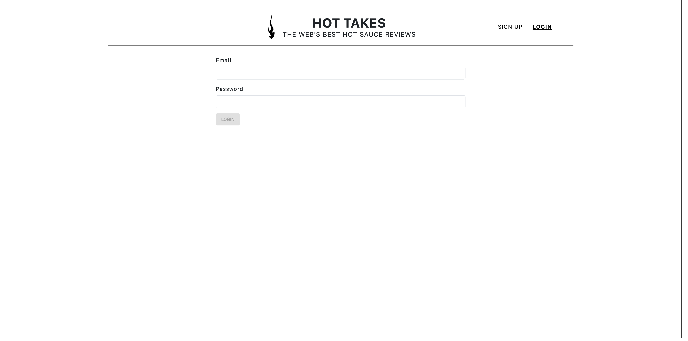
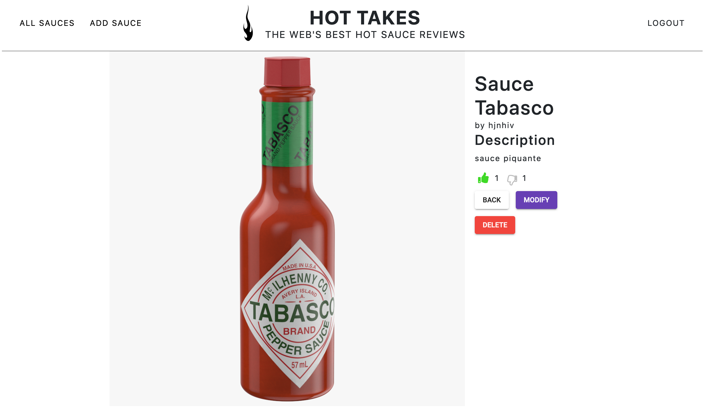
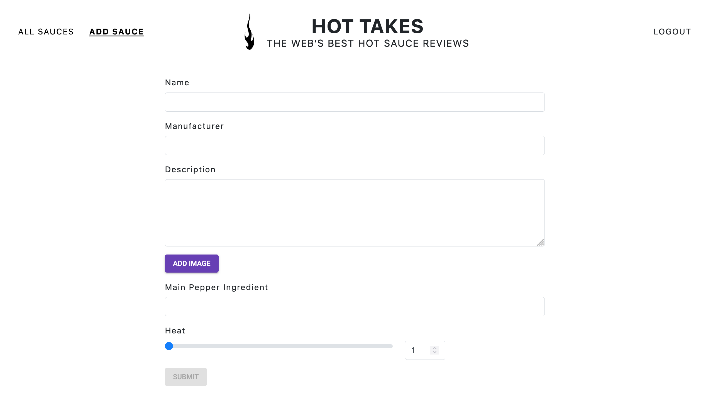

Piiquante
Construction d'une API sécurisée
La Mission
Développer le backend d'une application d'avis gastronomique .
Les outils utilisés
- Serveur : Node.JS / Express.JS
- Base de données : MongoDB / Mongoose / MongoDB Atlas
Contexte du projet
Piiquante se dédie à la création de sauces épicées dont les recettes sont gardées secrètes. Pour tirer parti de son succès et générer davantage de buzz, l'entreprise souhaite créer une application web dans laquelle les utilisateurs peuvent ajouter leurs sauces préférées et liker ou disliker les sauces ajoutées par les autres.
Composition du site
- Page d'inscription / de connexion
- La page d'accueil
- Les pages produits
- Page d'ajout de sauce
Dans un premier temps, l'utilisateur arrive sur une page d'inscription ou de connexion sécurisée : son email et son mot de passe sont enregistrés de façon cryptés dans la base de données Mongo DB. La page d'accueil
{kind=link}
Une fois authentiflié, l'utilisateur est dirigé sur la page d'accueil qui présente les différentes sauces créées par les utilisateurs.

Une page produit affiche les informations précises de la sauce. L'application offre la possibilité d'ajouter un "like" ou un "dislike" à la sauce.
{kind=link}
L'utilisateur peut également créer une nouvelle sauce. Pour plus de sécurité, il ne pourra supprimer ou modifier que les sauces qu'il a lui-même créé.
{kind=link}
Consulter le projet
Pour ce projet, j'ai utilisé le logiciel de versionning Git. Retrouvez le code source sur mon repositories GitHub